0. 문제 설명
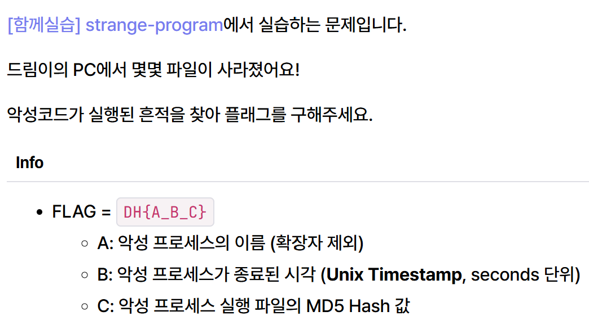
1. 문제 분석
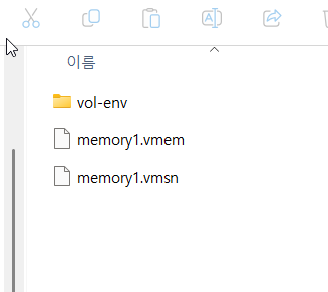
문제에서 제공해 준 두 개의 파일이다.
종료된 프로그램을 찾아야 하기 때문에, pslist가 아닌 psscan을 사용하기로 한다.
| pslist | 실행 중인 프로세스 목록 |
|---|---|
| psscan | 메모리 전체 (종료된 프로세스도 찾음) |
2. 의심 프로세스 찾기
2-1. OS 프로파일
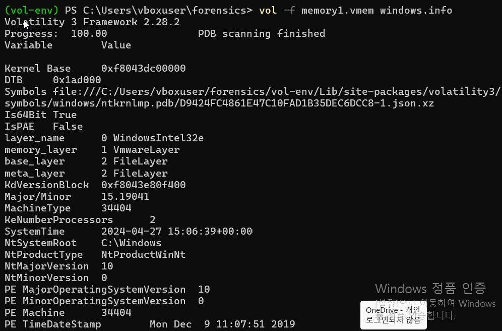
2-2. 프로세스 관련 정보
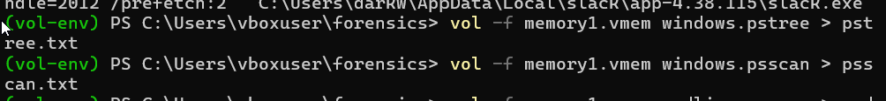
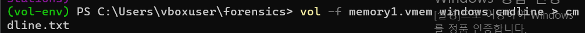
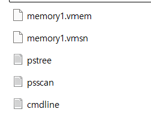
2-3. notepad++
의심 프로세스
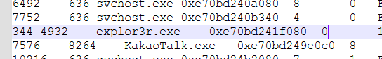
의심 프로세스
explor3r.exe — explorer.exe의 e를 3으로 변경한 것처럼 보인다.
부모 프로세스
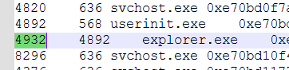
부모 프로세스가 explorer.exe이다. 사용자가 직접 실행했다는 의미를 지닌다.
자식 프로세스
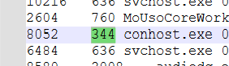
conhost.exe는 콘솔 프로그램이다. 진짜 explorer.exe라면 바로 밑에 conhost를 만들지 않는다.
일반적인 경우
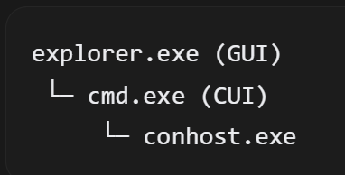
일반적인 경우는 이러한 형태를 띤다. 즉, explor3r.exe는 콘솔 프로그램일 확률이 높아 보인다.
pstree, cmdline
explor3r.exe에 대한 정보를 발견하지 못했다. →explor3r.exe가 종료됐다는 근거- 종료된 프로세스에 대한 정보는 보이지 않기 때문!
3. 의심 프로세스 분석
3-1. 메모리 덤프
offset 찾기
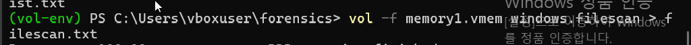
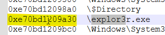
파일 덤프
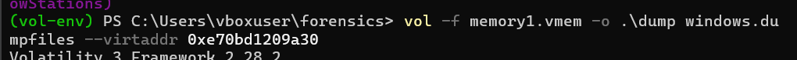
찾은 offset으로 explor3r.exe 파일을 덤프한다.
MD5 해시값
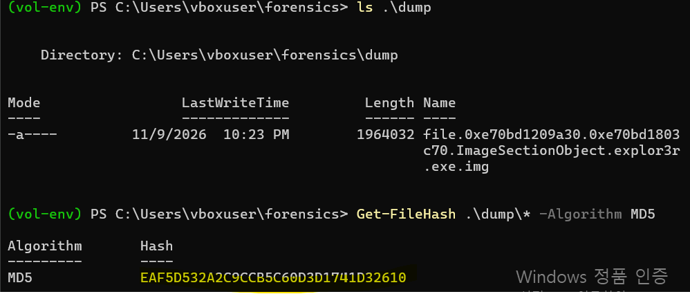
| MD5 | EAF5D532A2C9CCB5C60D3D1741D32610 |
|---|
3-2. 종료된 시각 찾기
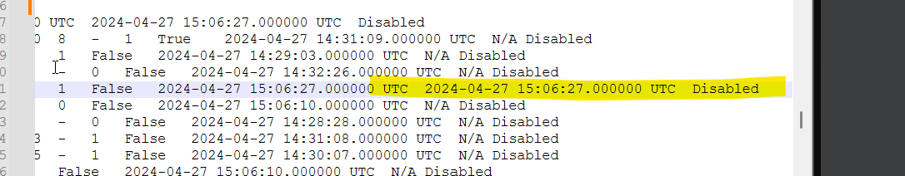
explor3r.exe의 종료된 시각에 대한 정보는 나와 있지 않아, 의심 프로세스가 종료되면 뒤이어 종료될
conhost.exe의 종료 시각을 알아보았다.
Unix Timestamp
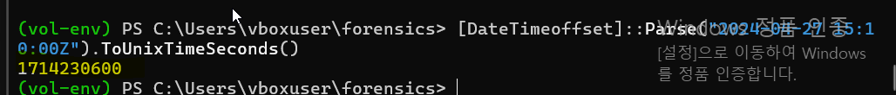
| Unix Timestamp | 1714230600 |
|---|
4. 플래그
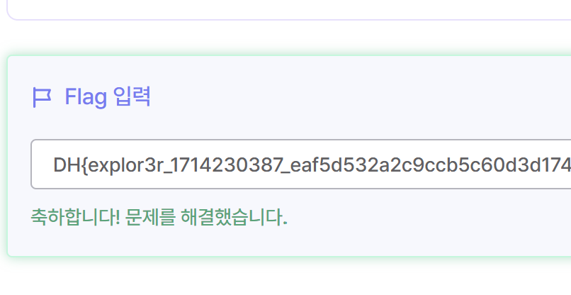